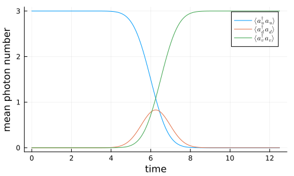
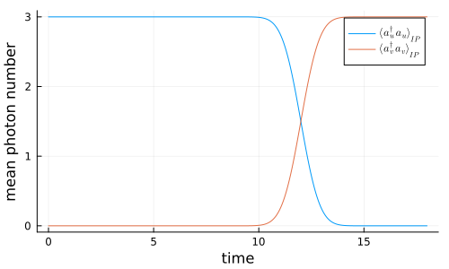

Simple Pulse Delay with a Virtual Cavity
In this example, a single-photon pulse is emitted from an input cavity, delayed by a virtual delay cavity, and finally captured by an output cavity. The delay cavity is driven by an incoming pulse u(t) and simultaneously emits a delayed pulse u(t-τ) using the pulse-shaping couplings introduced in V. R. Christiansen and K. Mølmer, Phys. Rev. A 113, 013730 (2026).
using QuantumInputOutputusing SecondQuantizedAlgebrausing Symbolics: Symbolicsusing QuantumOpticsusing QuantumOpticsBase: daggerusing SymbolicUtilsusing LinearAlgebrausing Plotsusing LaTeXStrings# symbolic Hilbert spacehu = FockSpace(:u)hd = FockSpace(:d)hv = FockSpace(:v)h = hu ⊗ hd ⊗ hv# symbolic operatorsau = Destroy(h, :a_u, 1)ad = Destroy(h, :a_d, 2)av = Destroy(h, :a_v, 3)# symbolic parameters@variables g_u::Number g_in::Number g_out::Number g_v::NumberThe input cavity couples ($g_u(t)'*a_u$) into the input port of the delay cavity ($g_{in}(t)*a_d$) and the delay cavity couples the photons via the output port ($g_{out}(t)*a_d$) into the the output cavity ($g_v(t)'*a_v$). This leads to the following cascade of SLH elements.
G_u = SLH(1, g_u'*au, 0)G_u2 = concatenate(G_u, SLH(1, 0, 0))S2 = Matrix(I, 2, 2)G_d = SLH(S2, [g_in*ad, g_out*ad], 0)G_v = SLH(1, g_v'*av, 0)G_v2 = concatenate(SLH(1, 0, 0), G_v)G_cas = cascade(G_u2, G_d, G_v2)H = hamiltonian(G_cas)L = jump_operator(G_cas)# short pulse delayσ = 1.0tp = 6*στ = 0.5σ # pulse delayu(t) = 1/(√(σ)*π^(1/4)) * exp(-(t - tp)^2 / (2*σ^2))u_del(t_) = u(t_ - τ)Tend = 2tp + τdt = Tend/5e2T = [0:dt:Tend;]gu_ = coupling_input(u, T)gout_ = coupling_delay_out(u_del, u, T)gin_ = coupling_delay_in(u_del, u, T)gv_ = coupling_output(u_del, T)dict_p_t = Dict([g_u, g_out, g_in, g_v] .=> [gu_, gout_, gin_, gv_])# numeric basesn = 3bu = FockBasis(n)bd = FockBasis(n)bv = FockBasis(n)b = bu ⊗ bd ⊗ bvH_QO = to_numeric(H, b; time_parameter = dict_p_t)L_QO = [to_numeric(L[i], b; time_parameter = dict_p_t) for i = 1:length(L)]function input_output(t, ρ) Ht = H_QO(t) Jt = [L_QO[i](t) for i = 1:length(L_QO)] return Ht, Jt, dagger.(Jt)end# time evolutionψ0 = fockstate(bu, n) ⊗ fockstate(bd, 0) ⊗ fockstate(bv, 0)t_, ρt = timeevolution.master_dynamic(T, ψ0, input_output)au_qo = to_numeric(au, b)ad_qo = to_numeric(ad, b)av_qo = to_numeric(av, b)nu = real.(expect(dagger(au_qo)*au_qo, ρt))nd = real.(expect(dagger(ad_qo)*ad_qo, ρt))nv = real.(expect(dagger(av_qo)*av_qo, ρt))p = plot(T, nu; label = L"\langle a_u^\dagger a_u \rangle")plot!(p, T, nd; label = L"\langle a_d^\dagger a_d \rangle")plot!(p, T, nv; label = L"\langle a_v^\dagger a_v \rangle")plot!( p; xlabel = "time", ylabel = "mean photon number", grid = true, legend = :best, size = (500, 300),)p
We can see that the pulse is perfectly absorbed by the delayed output mode $v(t) = u(t-\tau)$
Interaction picture for the input and delay cavities
Introducing a separate cavity to delay the pulse can be a big disadvantage if one has multiple modes. To eliminate the delay cavity, we can transform into the interaction picture of the output and delay cavity coupling. This is, however, only possible if the delay is larger than the pulse, because only then we have $g_{in}(t) \approx g_{v=u}(t)$. Nevertheless, since in most cases only the relative delay between different modes is crucial, e.g. for two arms of an interferometer, we can simply add a constant delay $T_c \gg \sigma$ to all modes.
G_d_in = SLH(S2, [g_in*ad, 0], 0)H_ud = hamiltonian(cascade(G_u2, G_d_in))H_int_sym_ = simplify(H - H_ud)M(i, j) = Symbolics.variable(Symbol("M_{$(i)$(j)}"); T = Complex{Real})a0_ls = [au, ad]la = length(a0_ls)a_int_ls = [sum(M(i, j)*a0_ls[j] for j = 1:la) for i = 1:la]int_dict = Dict([a0_ls; adjoint.(a0_ls)] .=> [a_int_ls; adjoint.(a_int_ls)])H_int_sym = simplify(substitute(H_int_sym_, int_dict))(0.5g_out*g_v*imag(var"M_{21}") + (-0.5g_out*g_v*real(var"M_{21}"))im) * a_u * a_v' + (0.5conj(g_v)*conj(g_out)*imag(var"M_{21}") + (0.5conj(g_v)*conj(g_out)*real(var"M_{21}"))im) * a_u' * a_v + (0.5g_out*g_v*imag(var"M_{22}") + (-0.5g_out*g_v*real(var"M_{22}"))im) * a_d * a_v' + (0.5conj(g_v)*conj(g_out)*imag(var"M_{22}") + (0.5conj(g_v)*conj(g_out)*real(var"M_{22}"))im) * a_d' * a_vL_int_sym = simplify.(substitute.(L, Ref(int_dict)))L_int_sym[1]((conj(g_u)*real(var"M_{11}") + g_in*real(var"M_{21}")) + (conj(g_u)*imag(var"M_{11}") + g_in*imag(var"M_{21}"))im) * a_u + ((conj(g_u)*real(var"M_{12}") + g_in*real(var"M_{22}")) + (conj(g_u)*imag(var"M_{12}") + g_in*imag(var"M_{22}"))im) * a_dL_int_sym[2](g_out*real(var"M_{21}") + (g_out*imag(var"M_{21}"))im) * a_u + (g_out*real(var"M_{22}") + (g_out*imag(var"M_{22}"))im) * a_d + conj(g_v) * a_v# long pulse delayσ = 1.0tp = 6*στ = 6σ # pulse delayu(t) = 1/(√(σ)*π^(1/4)) * exp(-(t - tp)^2 / (2*σ^2))u_del(t_) = u(t_ - τ)Tend = 2tp + τdt = Tend/5e2T = [0:dt:Tend;]gu_ = coupling_input(u, T)gout_ = coupling_delay_out(u_del, u, T)gin_ = coupling_delay_in(u_del, u, T)gv_ = coupling_output(u_del, T)# interaction-picture coefficient matrix M(t) for u ↔ dA_ud = coupling_matrix((gu_, gin_))M_t = solve_mode_evolution(A_ud, T)M_ls = [M(i, j) for i = 1:la for j = 1:la]M_t_ls = [t -> M_t(t)[i, j] for i = 1:la for j = 1:la]p_t_sym = [g_u, g_in, g_out, g_v, M_ls...]p_t_num = [gu_, gin_, gout_, gv_, M_t_ls...]dict_p_t_int = Dict(p_t_sym .=> p_t_num)The interaction picture eliminates the delay cavity d, so the numeric operators live on the two-mode basis bu ⊗ bv (with ad mapped to the identity). Build on that basis.
b_int = bu ⊗ bvau_int = destroy(bu) ⊗ one(bv)ad_int = one(bu ⊗ bv)av_int = one(bu) ⊗ destroy(bv)operators = Dict( [au, au', ad, ad', av, av'] .=> [au_int, au_int', ad_int, ad_int', av_int, av_int'],)H_int_QO = to_numeric(H_int_sym, b_int; time_parameter = dict_p_t_int, operators)L_int_QO = [ to_numeric(L_int_sym[i], b_int; time_parameter = dict_p_t_int, operators) for i = 1:length(L_int_sym)]function input_output_int(t, ρ) Ht = H_int_QO(t) Jt = [L_int_QO[i](t) for i = 1:length(L_int_QO)] return Ht, Jt, dagger.(Jt)endψ0_int = fockstate(bu, 3) ⊗ fockstate(bv, 0)t_int, ρt_int = timeevolution.master_dynamic(T, ψ0_int, input_output_int)nu_int = real.(expect(dagger(au_int)*au_int, ρt_int))nv_int = real.(expect(dagger(av_int)*av_int, ρt_int))Above we introduced the unity matrix for the delay cavity operators which guarantees that it does not have an effect. We can see that the delayed pulse is perfectly absorbed.
p = plot(T, nu_int; label = L"\langle a_u^\dagger a_u \rangle_{IP}")plot!(p, T, nv_int; label = L"\langle a_v^\dagger a_v \rangle_{IP}")plot!( p; xlabel = "time", ylabel = "mean photon number", grid = true, legend = :best, size = (500, 300),)p
Package versions
using InteractiveUtilsversioninfo()using PkgPkg.status( [ "QuantumInputOutput", "SecondQuantizedAlgebra", "QuantumOptics", "Plots", "LaTeXStrings", ], mode = PKGMODE_MANIFEST,)Julia Version 1.13.0
Commit d1c37793dd2 (2026-09-09 19:00 UTC)
Build Info:
Official https://julialang.org release
Platform Info:
OS: Linux (x86_64-linux-gnu)
CPU: 4 × AMD EPYC 7763 64-Core Processor
WORD_SIZE: 64
LLVM: libLLVM-20.1.8 (ORCJIT, znver3)
GC: Built with stock GC
Threads: 1 default, 0 interactive, 1 GC (on 4 virtual cores)
Environment:
JULIA_PKG_SERVER_REGISTRY_PREFERENCE = eager
JULIA_DEBUG = Documenter,Literate
JULIA_NUM_THREADS = 1
Status `~/work/QuantumInputOutput.jl/QuantumInputOutput.jl/docs/Manifest.toml`
⌅ [7d9fca2a] Arpack v0.5.3
⌅ [861a8166] Combinatorics v1.0.2
[d38c429a] Contour v0.6.3
⌅ [82cc6244] DataInterpolations v9.5.0
[459566f4] DiffEqCallbacks v4.19.3
[77a26b50] DiffEqNoiseProcess v5.36.3
[c87230d0] FFMPEG v0.4.5
[7a1cc6ca] FFTW v1.10.0
⌅ [53c48c17] FixedPointNumbers v0.8.6
[069b7b12] FunctionWrappers v1.1.3
[28b8d3ca] GR v0.73.27
[42fd0dbc] IterativeSolvers v0.9.4
[1019f520] JLFzf v0.1.11
[682c06a0] JSON v1.8.0
[0b1a1467] KrylovKit v0.10.4
[b964fa9f] LaTeXStrings v1.4.1
[23fbe1c1] Latexify v0.16.12
[7a12625a] LinearMaps v3.11.4
[442fdcdd] Measures v0.3.3
[d8a4904e] MutableArithmetics v1.8.0
[77ba4419] NaNMath v1.1.4
[e7bfaba1] NumericalIntegration v0.3.4
[1dea7af3] OrdinaryDiffEq v7.8.1
[1344f307] OrdinaryDiffEqLowOrderRK v2.2.5
[ccf2f8ad] PlotThemes v3.3.0
[995b91a9] PlotUtils v1.4.4
[91a5bcdd] Plots v1.41.7
[aea7be01] PrecompileTools v1.3.4
[18f9eda6] QuantumInputOutput v0.5.3 `~/work/QuantumInputOutput.jl/QuantumInputOutput.jl`
[5717a53b] QuantumInterface v0.4.4
[6e0679c1] QuantumOptics v1.2.9
[4f57444f] QuantumOpticsBase v0.5.15
[3cdcf5f2] RecipesBase v1.3.4
[01d81517] RecipesPipeline v0.6.12
[731186ca] RecursiveArrayTools v4.5.1
[189a3867] Reexport v1.2.2
[05181044] RelocatableFolders v1.0.1
[ae029012] Requires v1.3.1
[0bca4576] SciMLBase v3.53.2
[431bcebd] SciMLPublic v1.3.0
[6c6a2e73] Scratch v1.3.0
⌅ [f7aa4685] SecondQuantizedAlgebra v0.11.0
[992d4aef] Showoff v1.1.1
[276daf66] SpecialFunctions v2.9.0
[90137ffa] StaticArrays v1.9.20
[10745b16] Statistics v1.11.5
[2913bbd2] StatsBase v0.34.13
[789caeaf] StochasticDiffEq v7.2.0
[d1185830] SymbolicUtils v4.46.4
[0c5d862f] Symbolics v7.39.2
[8ea1fca8] TermInterface v2.0.0
[1cfade01] UnicodeFun v0.4.1
[41fe7b60] Unzip v0.2.0
[2a0f44e3] Base64 v1.11.0
[ade2ca70] Dates v1.11.0
[f43a241f] Downloads v1.7.0
[37e2e46d] LinearAlgebra v1.13.0
[44cfe95a] Pkg v1.13.0
[de0858da] Printf v1.11.0
[3fa0cd96] REPL v1.11.0
[9a3f8284] Random v1.11.0
[2f01184e] SparseArrays v1.13.0
[fa267f1f] TOML v1.0.3
[cf7118a7] UUIDs v1.11.0
Info Packages marked with ⌅ have new versions available but compatibility constraints restrict them from upgrading. To see why use `status --outdated -m`
This page was generated using Literate.jl.